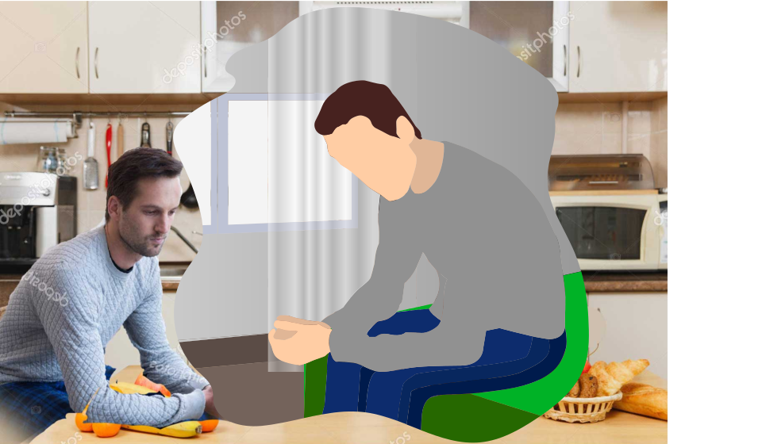

Introduction

Life expansion.. always heard of that word but never thought about it too much. It was something unbelievable to keep trying cutting through all the way till the endless ending. It was very red.. all the blood and the innocent people standing in lines to get their meat ready for expansion. I heard too much that word and still hearing it. I kept asking myself the same question: What does meat have to do with life expansion.
I worked hard as a butcher. People still look at me and ask me different things about life and future: Since when did you graduate? And what did you learn? The fact that I was not a graduate made me feel anxious about myself thinking about the good times I would have spent if I were in a university and with my friends surrounding me and asking questions to ourselves. This might be prettier than blood. I would have also mentioned in my CV that I hate the color red and that I love the color none (black) which have the most tremendous impact despite all colors. It is by the way the “color” of the universe, the utmost place where maybe anyone wish to achieve.